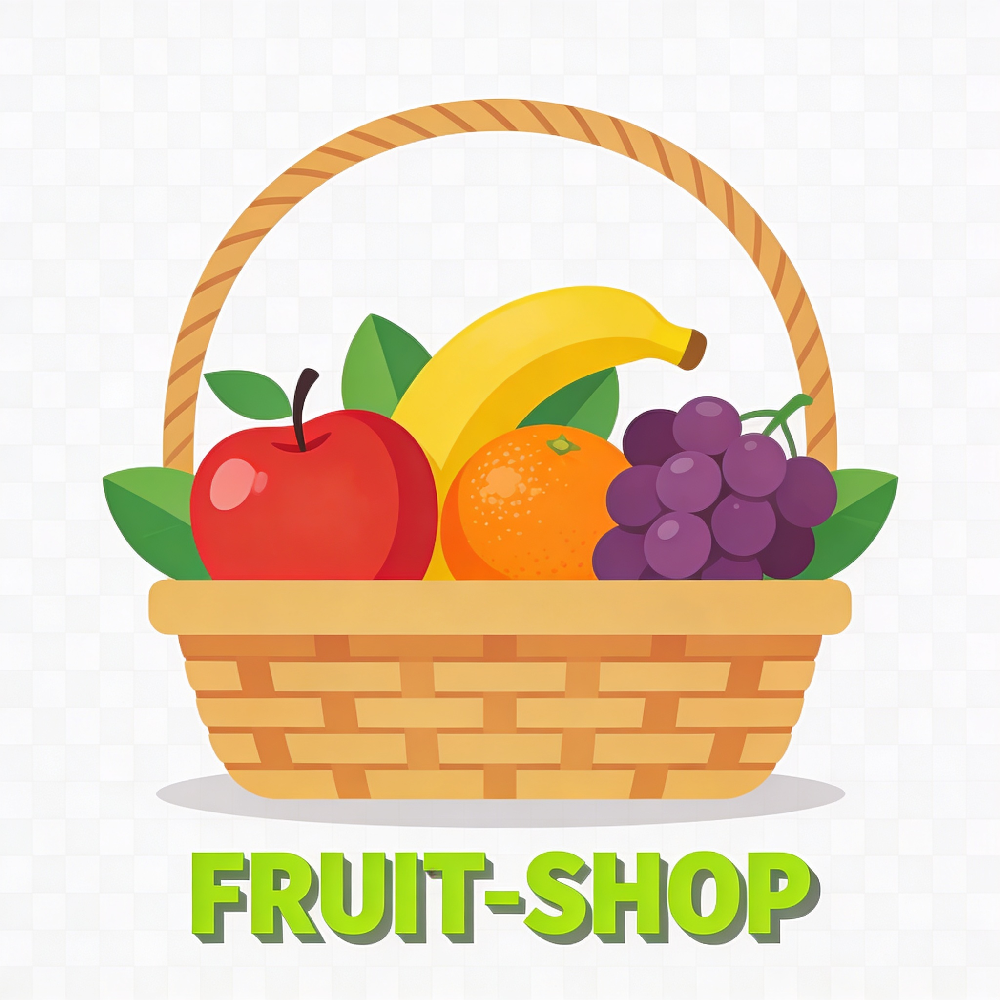
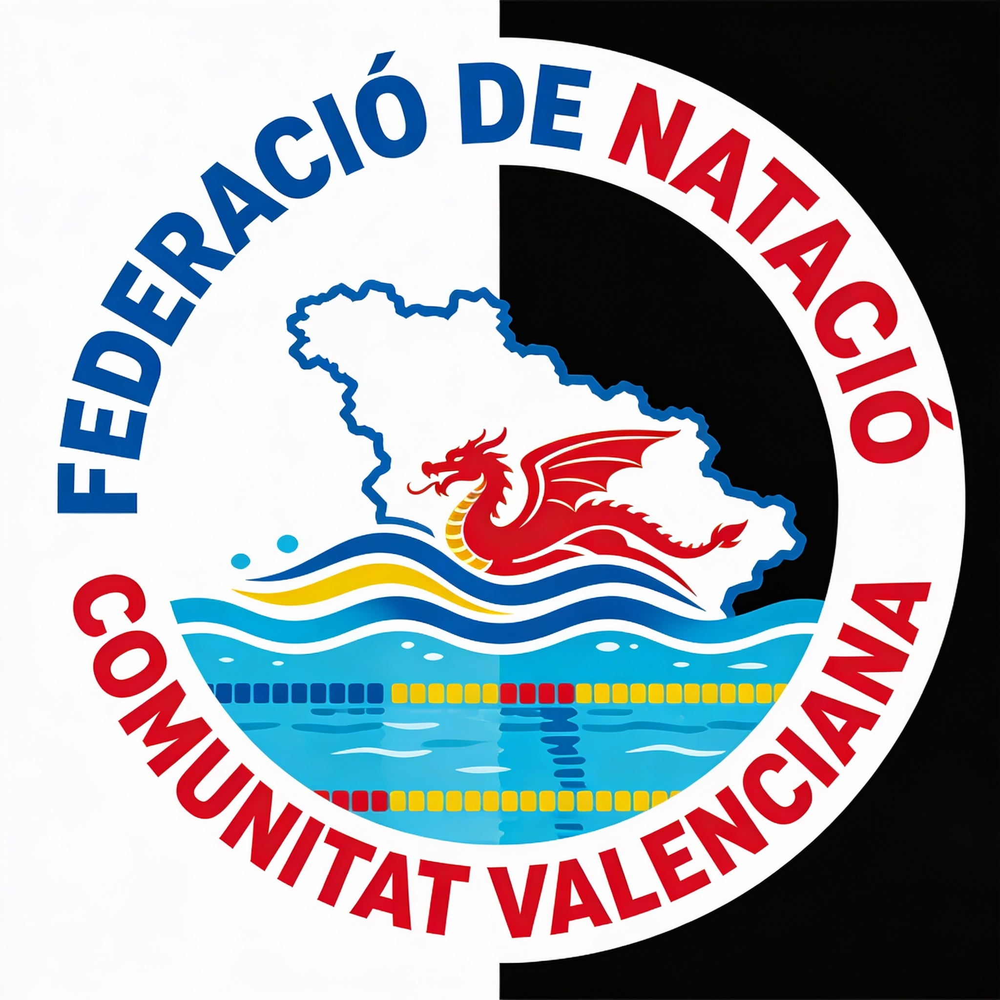
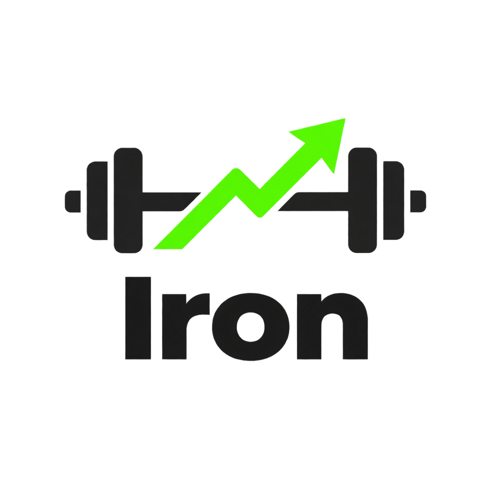
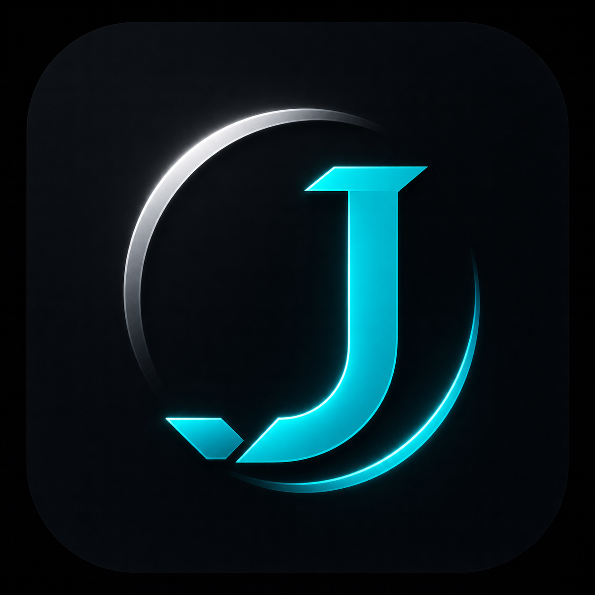
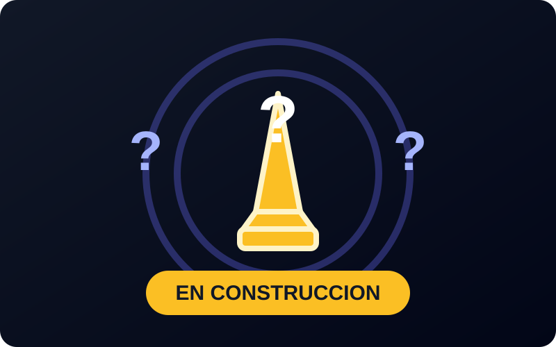

Ollama Chatbot
Chatbot local con Ollama y una pequeña interfaz web para probar modelos de lenguaje en tu propia máquina.
Python
Flask
Ollama
Soy Modest Luis, desarrollador formado en DAM especializado en backend, apps móviles y aplicaciones de escritorio. Me centro en escribir código claro, seguro y escalable, orientado a negocio.
Desarrollador orientado a construir aplicaciones web útiles, mantenibles y bien probadas.
Soy Modest Luis, desarrollador de aplicaciones multiplataforma formado en DAM. Me especializo en el desarrollo de aplicaciones web con Python y Django en el backend, Angular y TypeScript en el frontend, y APIs REST orientadas a las necesidades del negocio.
Me interesa entender cómo funcionan los sistemas de principio a fin: desde la lógica del backend y las bases de datos hasta la interfaz, las integraciones y las pruebas automatizadas. Trabajo con PostgreSQL, Redis, Docker y herramientas de testing para desarrollar y depurar software de forma más fiable.
Busco seguir creciendo en un equipo de desarrollo donde pueda aportar en backend, frontend y automatización de procesos, mientras profundizo en arquitectura, patrones de diseño y buenas prácticas.
GitHub: twelfetitan
LinkedIn: Modest Luis
Desarrollo de aplicaciones web, APIs y soluciones empresariales.
Desarrollo de aplicaciones web B2B
Participación en el desarrollo y mantenimiento de aplicaciones web empresariales con backend en Python y Django, frontend en Angular e integraciones entre microservicios.
Backend y APIs REST
Desarrollo de endpoints y lógica de negocio con Django y Django REST Framework, trabajando con PostgreSQL, Redis y tareas asíncronas mediante Celery.
Frontend y pruebas automatizadas
Desarrollo y depuración de interfaces en Angular, además de pruebas end-to-end con Playwright y pytest para validar flujos de usuario y comportamientos de la aplicación.
Entornos Docker y depuración
Uso de Docker y Docker Compose para levantar servicios locales, ejecutar migraciones, depurar workers en segundo plano y reproducir incidencias en un entorno controlado.
Algunos proyectos seleccionados que representan mi forma de trabajar.
Chatbot local con Ollama y una pequeña interfaz web para probar modelos de lenguaje en tu propia máquina.

Tienda online de frutas en PHP con gestión de catálogo, carrito de compra y panel de administración.

Módulo Odoo para gestionar clubes, nadadores, campeonatos y resultados de natación, con rankings y cuotas.

App de gimnasio para planificar rutinas, registrar entrenamientos y seguir tu progreso y pulsaciones con IA.

Aplicacion para registrar y gestionar el trabajo diario.

Próximamente habrá un nuevo proyecto por aquí. Todavía está en construcción.
Tecnologías con las que trabajo en el día a día de mis proyectos.
Lenguajes
Python Java JavaScript C++ SQL
Frameworks & plataformas
Django Django REST Node.js Celery Pytest
Herramientas & otros
Git Docker Postman PostgreSQL Draw.io
¿Te interesa mi perfil? Hablemos.